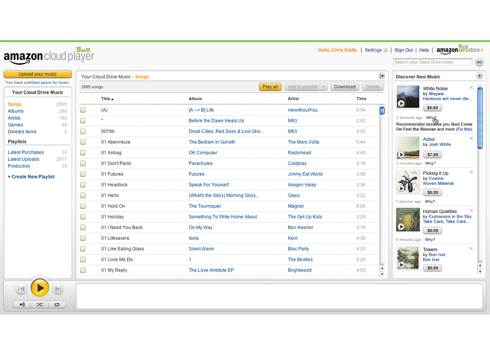
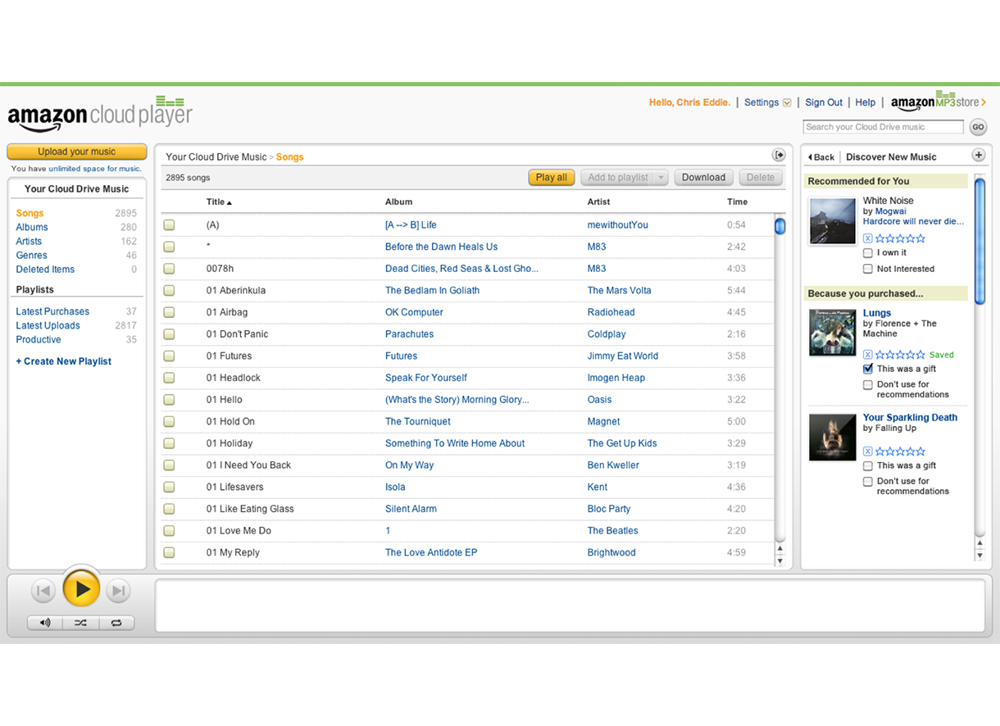
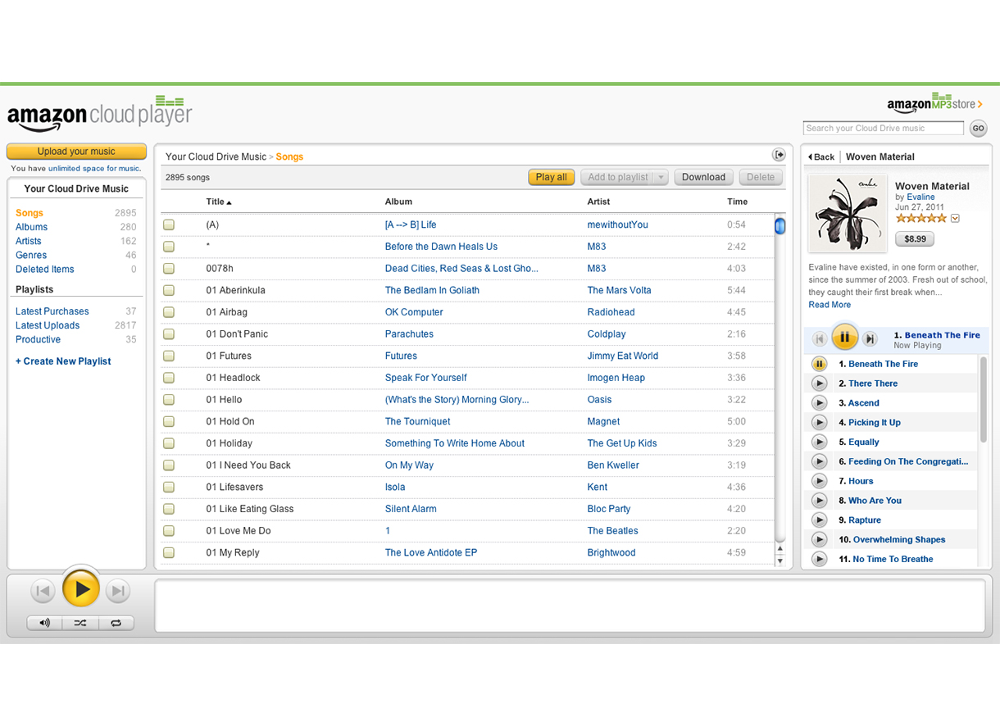

chriseddie.com / Amazon
chriseddie.com / Amazon
Cloud Player Recommendations
One of the many things Amazon is known for is its powerful recommendation engine. For a large part of my time there, I worked on an all engineer backend service team that was focused on sourcing music-related data and using it in interesting ways to help customers discover new music and increase digital music sales. One of the projects our team launched was real-time recommendations within Cloud Player based on the music a customer was currently listening to.

Recommendations panel showing music suggestions based on listening history.
Providing contextually relevant and the ability to tune suggested content is a key requirement to the Amazon recommendation specification. I built a stack UI that a customer could drill into to learn how the content was suggested and a way to tune the engine to show more or less content of a specific type.

Tuning the recommendation engine by providing contextual relevance.
Furthering the stack UI, a customer could also drill down to recommended collections and view the content within that collection. Song samples could be played inline and purchases made directly from Cloud Player. Building the first off-site Amazon purchase experience to date required extensive UX work to maintain the expectation of simplicity that comes with buying from Amazon.

Collection detail view allowed sampling and the first off-site purchase experience from Amazon.
Date: 2011 - 2012
Company: Amazon
Project: Cloud Player Recommendations
Role: UI Designer
Team: 10 software engineers, 1 product manager.